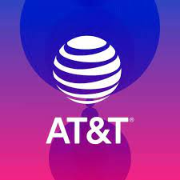
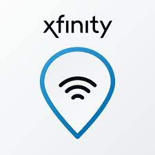
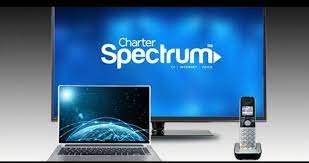
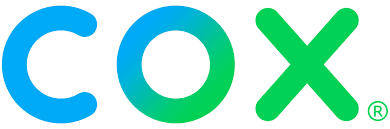
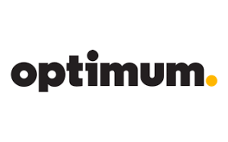

Internet es una red de computadoras interconectadas a nivel mundial en forma de tela de araña. Consiste de servidores (o "nodos") que proveen información a aproximadamente 100 millones de personas que están conectadas entre ellas a través de las redes de telefonía y cable.
Internet se basa básicamente en cuatro servicios:
Además como usuario puedes generar noticias e información. Internet dispone de herramientas que facilitan el trabajo: Whois, Archie, Wais, Gopher, etc.
1.La información está disponible las 24 horas del día en cualquier sitio del mundo.
2.Internet no pertenece a nadie y no existe una "primera página".
3.Cualquier persona puede poner información en Internet.
4.(Casi) no existen regulaciones para limitar el uso de Internet.
5.Internet brinda oportunidades novedosas y económicas para comunicarse.
La mejor compañía de Internet para cada persona realmente dependerá de las opciones disponibles en el lugar en donde viva.
Los proveedores de fibra suelen ser los mejores proveedores de Internet cuando están disponibles en tu área.
Sus servicios de comunicaciones incluyen telefonía local y de larga distancia, internet, redes privadas, transmisión de datos.
Es un proveedor global de servicios de telecomunicaciones, medios y tecnología. El segmento de comunicaciones de la empresa proporciona equipos y servicios inalámbricos a nivel nacional en los EE. UU.
Es un proyecto de Google para construir una infraestructura de red de banda ancha a Internet experimental, usando comunicación con fibra óptica en varias ciudades de Estados Unidos.
Es un operador de telefonía móvil de Estados Unidos fundado en el año 2000. Es el mayor operador móvil del país con más de 80 millones de clientes.
Una subsidiaria de Comcast Corporation, utilizada para comercializar a consumidores particulares televisión por cable, internet, teléfono y servicios inalámbricos proporcionados por la empresa.
Ofrece conectividad a Internet súper rápida, que comienza desde los 200 Mbps básicos hasta los 1000 Mbps. Cada nivel de velocidad es suficiente para admitir múltiples dispositivos y todas sus actividades en la web, como transmisión, navegación y descarga.
Es un proveedor estadounidense de televisión por cable digital, telecomunicaciones y servicios de domótica.
Es una excelente opción, especialmente para las personas que necesitan más velocidad de la que ofrece el DSL, pero no pueden costear el servicio de fibra óptica.
